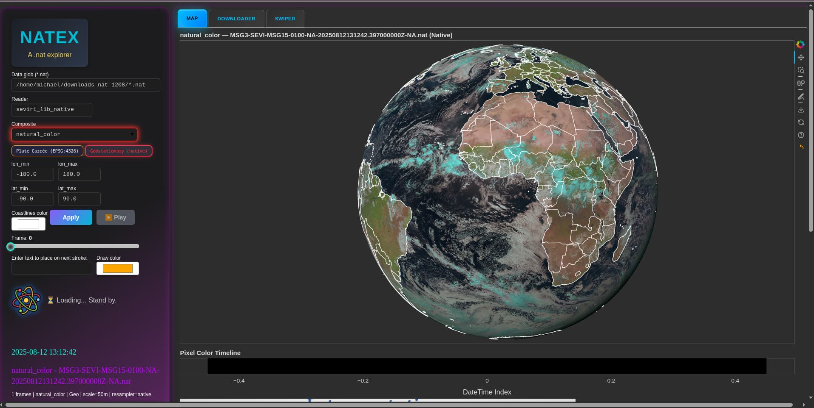
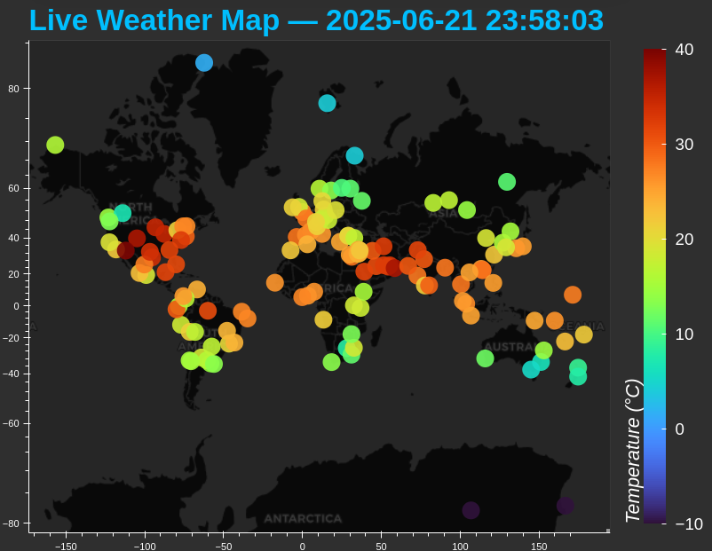
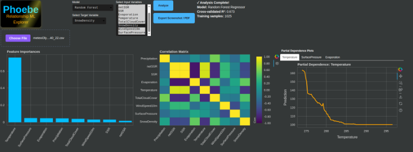
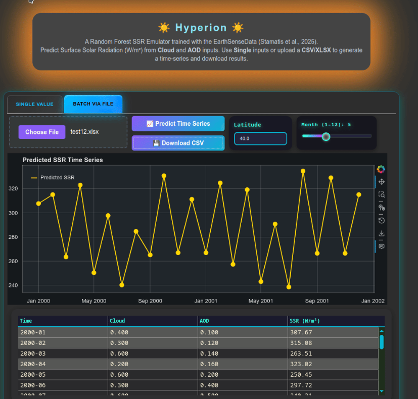
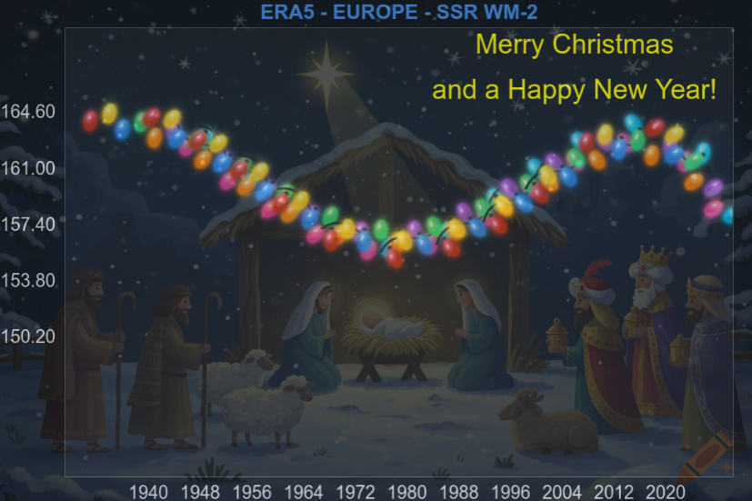

GRECHO
Visit my Blogpost
Stories from Byzantium and Early Modern Greece
Read MoreData Engineer · PhD in Atmospheric Physics
I'm a Data Engineer at NIKI Digital Engineering (partner: Audi, BMW) with a PhD in Atmospheric Sciences. My early research on climate and radiation datasets sparked my interest in building systems that turn complex data into something practical and usable. Today, I design scalable ETL pipelines and applications using Python, PySpark, SQL, and AWS — cutting report latency and automating workflows for the German automotive industry. I also build full-stack web applications as a freelancer and teach Python to aspiring data scientists. Outside of work, I teach physics and math to high school students, and enjoy stargazing, cycling, gardening, and exploring Greek history.
Sep 2020 – Sep 2025
Oct 2023
Sep 2016 – Jun 2019
Sep 2012 – Sep 2016
Jun 2024 – Present · Full Time
NIKI Digital Engineering (External partner: Audi, BMW) · Remote
Oct 2020 – Sep 2025 · Full Time
Laboratory of Meteorology and Climatology, University of Ioannina
Mar 2022 – Present · Part Time
Laboratory of Meteorology and Climatology, University of Ioannina
2024 – Present · Part Time
2022 – 2023 · Full Time
Dioni: Computing Infrastructure for Big-Data Processing, University of Ioannina
2016 – Present · Part Time · Freelancer






A Random Forest SSR Emulator trained with EarthSense data (Stamatis et al., 2025).


Atmospheric Research, Volume 322, 2025, 108140. https://doi.org/10.1016/j.atmosres.2025.108140
The Global Dimming and Brightening (GDB) phenomenon plays an important role in the Earth's climate, with clouds and aerosols being the major drivers. This study investigates GDB causes by quantifying the contributions of changes in clouds, aerosols, water vapor and ozone to the surface solar radiation (SSR) changes during 1984–2018. To this aim, radiative transfer calculations were performed by the FORTH-RTM on a monthly basis and 0.5°x0.625° spatial resolution using modern and improved datasets for clouds and aerosols. Validation against high-quality ground measurements confirmed RTM's reliability. Results show a global mean brightening of 0.88 Wm−2decade−1 from 1984 to 2018, stronger over land (2.57 Wm−2decade−1) than oceans (0.19 Wm−2decade−1). Globally, changes in clouds were the main GDB drivers. However, the contribution of aerosol optical depth (AOD) changes was remarkable over specific land areas with strong anthropogenic activity, such as Europe, India and East China.
Climatic Change 177, 156 (2024). https://doi.org/10.1007/s10584-024-03810-6
The aim of this study is to investigate the possible relationship between the recent global warming and the interdecadal changes in incoming surface solar radiation (SSR), known as global dimming and brightening (GDB). The analysis is done on a monthly and annual basis on a global scale for the 35-year period 1984–2018 using surface temperature data from ERA5 reanalysis and SSR fluxes from the FORTH radiative transfer model. Our analysis shows that SSR fluctuations affect global warming rates. During the dimming phase in the 2000s, warming rates slowed down over Europe and East Asia, while during brightening phases warming rates were reinforced. Although GDB is not the primary driver of recent global warming, it can affect warming rates, partly counterbalancing or accelerating the dominant greenhouse warming.
Atmosphere 2023, 14, 1258. https://doi.org/10.3390/atmos14081258
In this study, an assessment of the FORTH radiative transfer model (RTM) surface solar radiation (SSR) as well as its interdecadal changes is performed during 1984–2018. A thorough evaluation against high-quality reference surface measurements from 1193 GEBA and 66 BSRN stations is conducted. For the first time, the FORTH-RTM delta(SSR) was evaluated over an extended period of 35 years at 0.5°×0.625° spatial resolution. The RTM deseasonalized SSR anomalies correlate satisfactorily with GEBA (R=0.72) and BSRN (R=0.80). Results indicate a considerable and statistically significant increase in SSR (Brightening) over Europe, Mexico, Brazil, Argentina, Central and NW African areas from the early 1980s to the late 2010s.
Appl. Sci. 2022, 12, 10176. https://doi.org/10.3390/app121910176
This study assesses and evaluates the 40-year (1980–2019) MERRA-2 surface solar radiation (SSR) as well as its interdecadal changes against high-quality reference measurements from 1397 GEBA and 73 BSRN stations. The study is innovative in that MERRA-2 delta(SSR) has never been evaluated before, and the SSR fluxes have never been evaluated at this global scale over 40 years. The MERRA-2 deseasonalized SSR anomalies correlate well with GEBA (R=0.61) and BSRN (R=0.62), evaluated at temporal scales spanning from decadal sub-periods to 40 years.
I'm always open to discussing new projects, opportunities, or collaborations.
mixstam1453@gmail.com